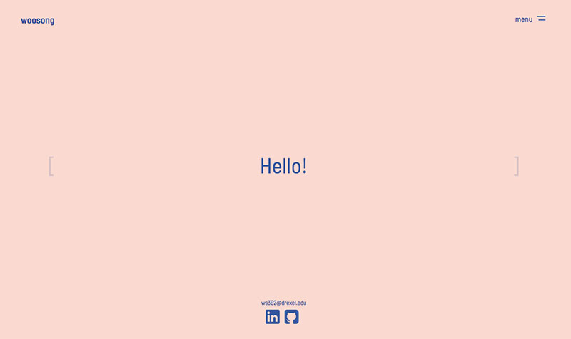
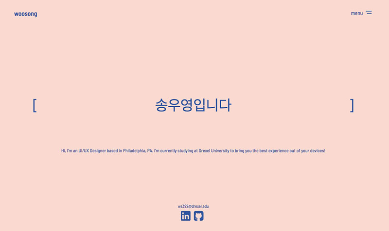
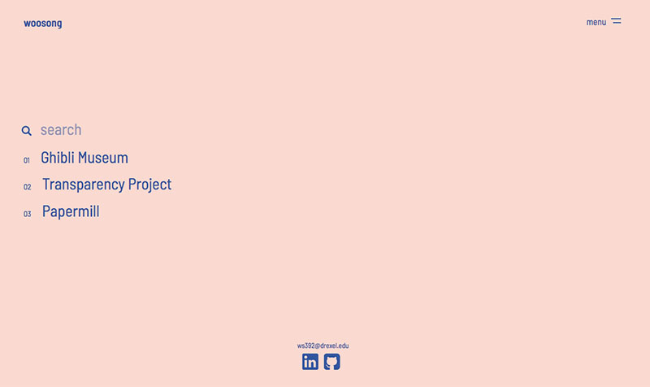
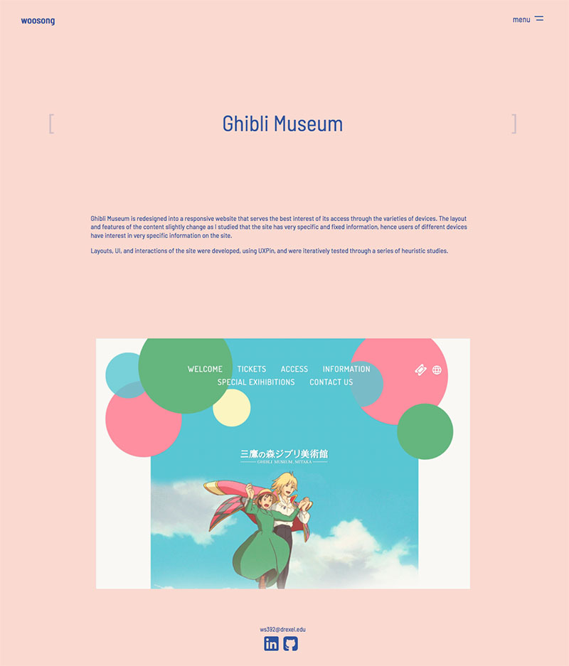

WordPress Theme
- Custom Theme Design
- Summer 2018
- Content Management System
- Visit the Site
The custom WordPress theme for portfolio website that is responsive and customizable. The use of simple color scheme and empty space surrounding the dynamic text scroll gives it an emphasis as it is used as the main tool to tell the story.
I began by defining the concept of my theme. Using Sketch, I transformed my ideas into visual representations at three break points and from there, I built a working model with HTML, SCSS, and JavaScript. I, then, turned that model into the actual WordPress theme by allowing it to flexibly update its contents from WordPress editor.



